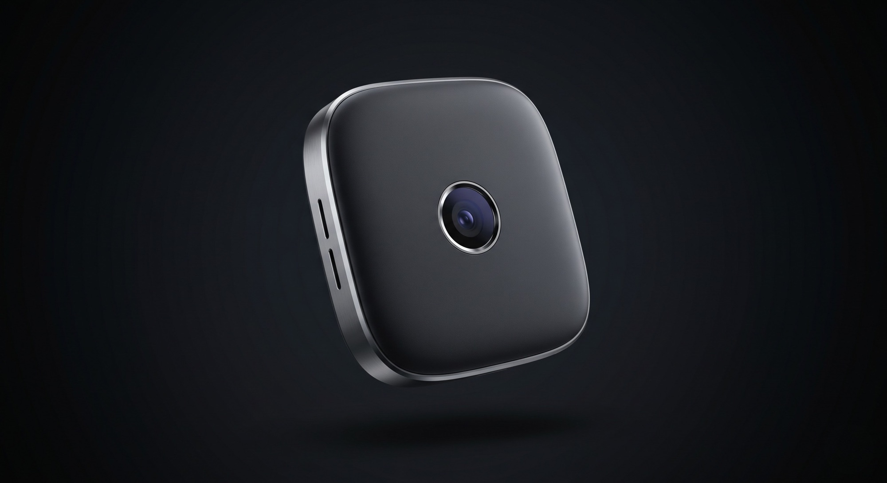
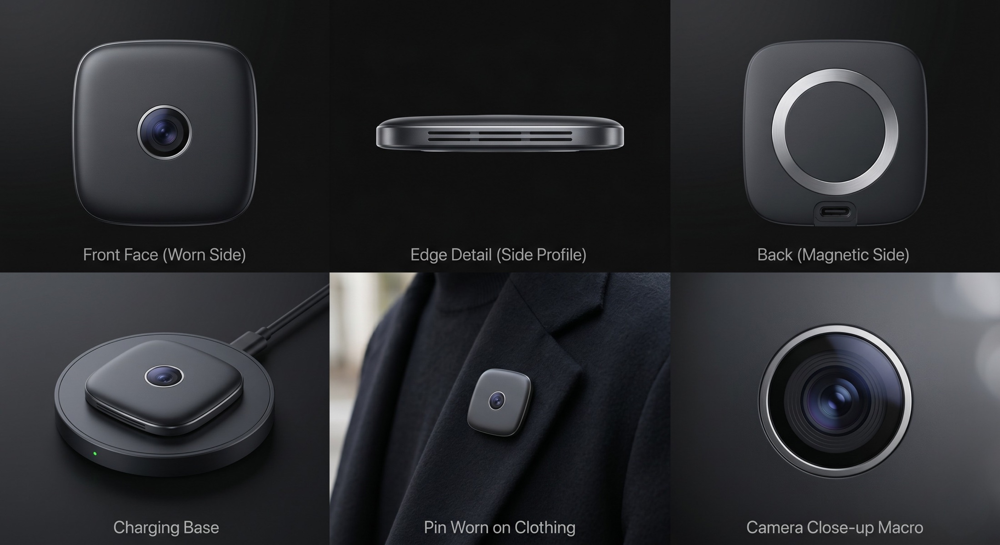
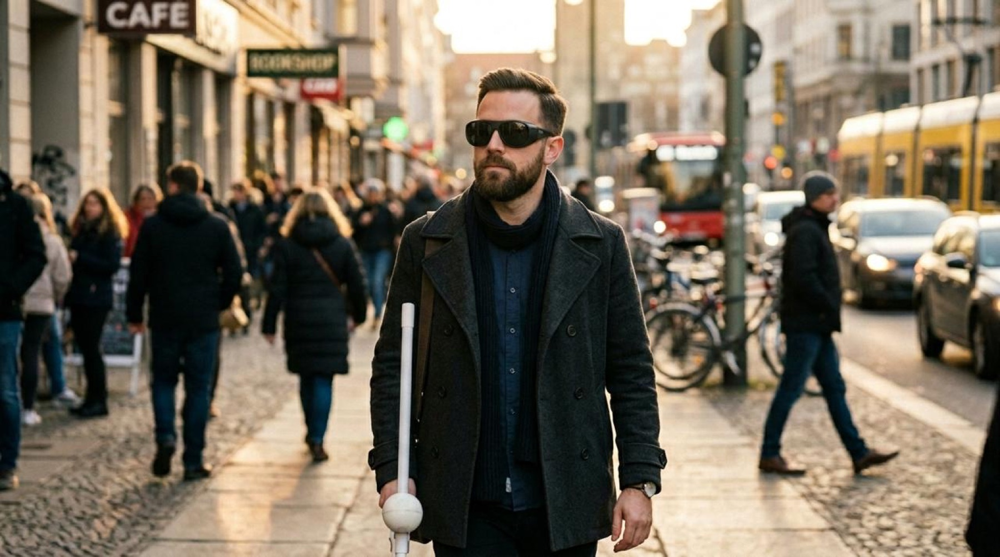
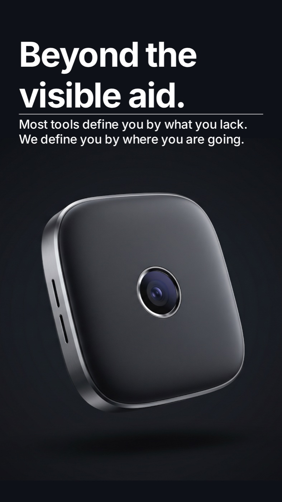

Mobility
Crossing roads, finding the right bus, locating a building entrance: everyday friction that sighted people never notice.
Wearable AI · Assistive technology
Finn the Pin is a discreet, magnetic AI companion for blind and visually impaired people: real-time audio guidance that helps you navigate the world, without ever announcing itself.

The problem
Crossing roads, finding the right bus, locating a building entrance: everyday friction that sighted people never notice.
Product labels, prices, expiry dates, signs. Critical information that stays just out of reach.
Depending on staff, family or strangers to complete the most routine of daily activities.
White canes and bulky wearables are visible markers of disability, and a source of discomfort.
Existing solutions are functionally limited, socially visible, or locked to one context. None combine real-time, multi-context AI assistance with a discreet, dignified form.

Meet Finn
Finn is a magnetic wearable that attaches to your lapel, collar or jacket and pairs with wireless earphones. A built-in camera and Generative AI read the world around you and speak it back, privately, in real time.
No screen. No buttons. No obvious gestures. Just a tap on the shoulder or a quiet voice command. It looks like an accessory, because it is one.
Capabilities
Real-time scanning of your surroundings, with audio alerts the moment a hazard appears.
Reads product labels, prices, expiry dates and signage aloud. Point and listen.
Identifies pedestrian lights, crossings and incoming bus numbers before you step out.
Turn-by-turn guidance that works both outdoors and inside buildings.
Two inputs, zero attention: a discreet shoulder tap and natural voice commands.
Continuous, contextual cues delivered only to you, through your earphones.
In the real world

Marco · 34 · daily commute
Marco clips Finn to his jacket and taps his shoulder. Through his earphones: the obstacles ahead, the pedestrian light, the bus stop, the number of the incoming bus. At his stop, Finn reads the building sign and walks him to the entrance.
Laura · 72 · weekly shop
Laura activates indoor mode with a word. Finn guides her down the aisle, reads ingredients, price and expiry aloud, compares the two products in her hands, and points her to the nearest checkout. No staff, no waiting, no embarrassment.
Design principles
Visible as a fashion accessory, never as assistive tech.
Every output is spoken privately. No visual interface required.
Designed to empower autonomy, never to highlight disability.
Camera capture assists only. No recording, no sharing.

Why Finn is different
Most tools define you by what you lack. Finn defines you by where you're going. A wearable pin instead of bulky glasses or handheld devices. One AI for mobility, navigation, recognition and reading. Voice and tap instead of obvious interaction.
When it's uncertain, it stays silent or asks. It never guesses dangerously. Fail safe. Fail quiet.
Finn the Pin is a project by Team 7, Prototyping Factory. Want to follow the work, partner, or learn more?
Get in touch